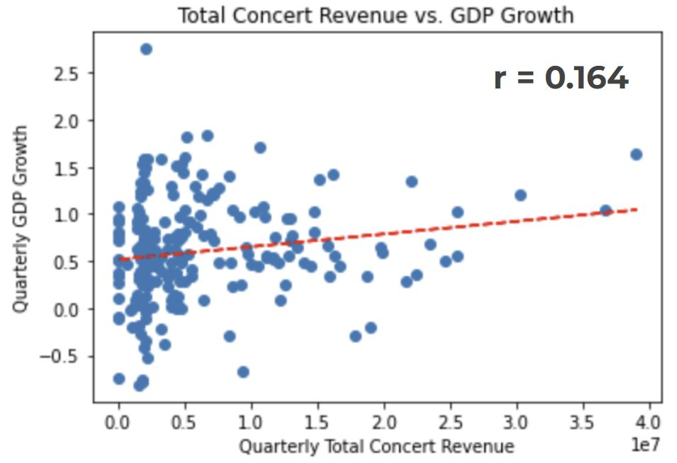
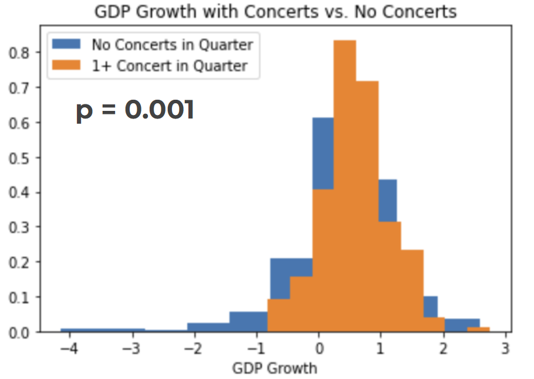
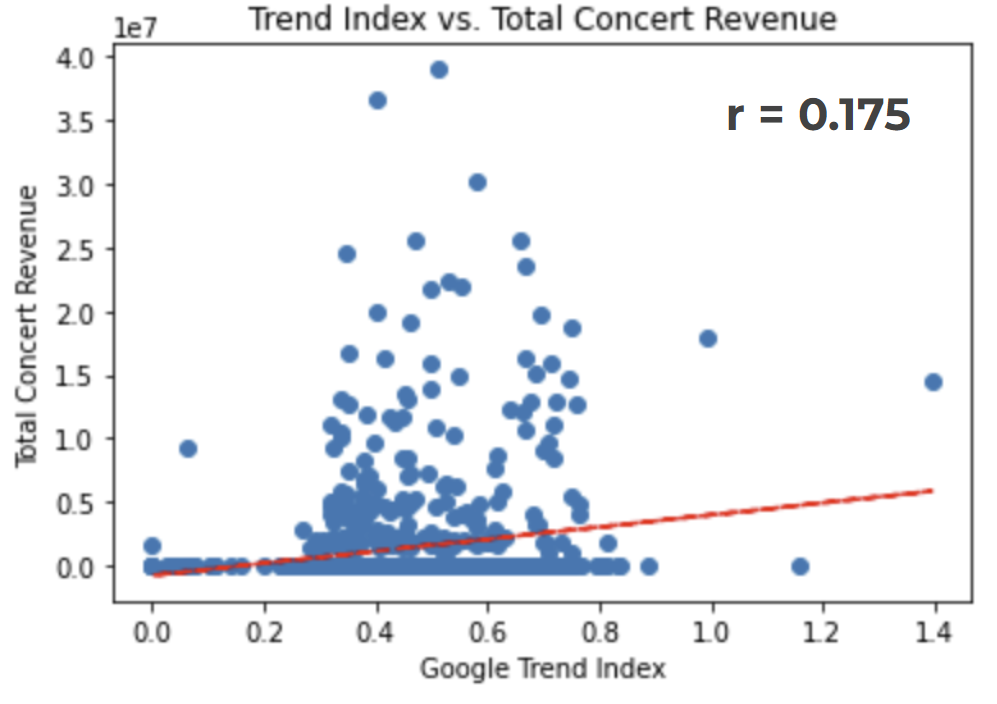
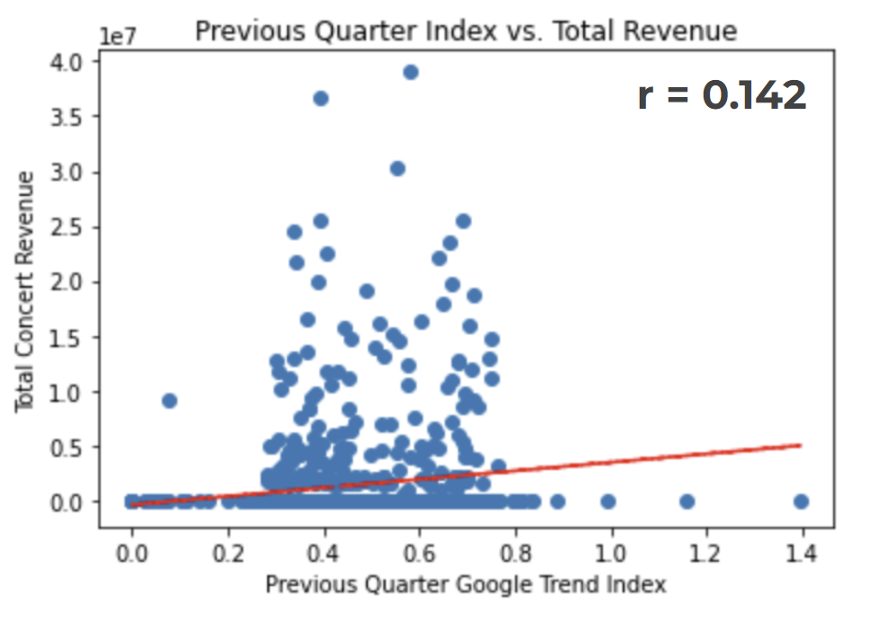
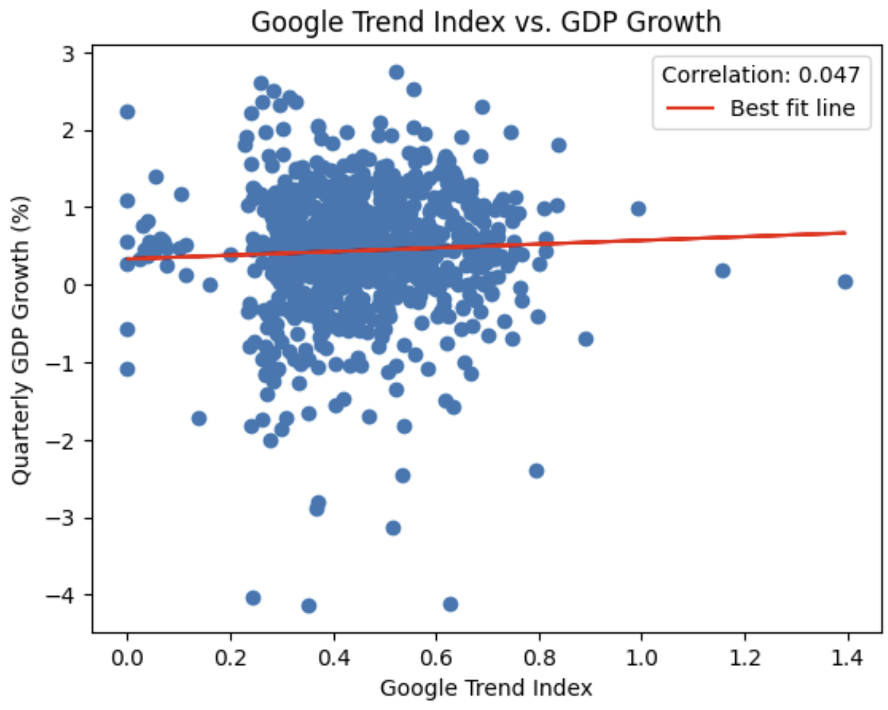
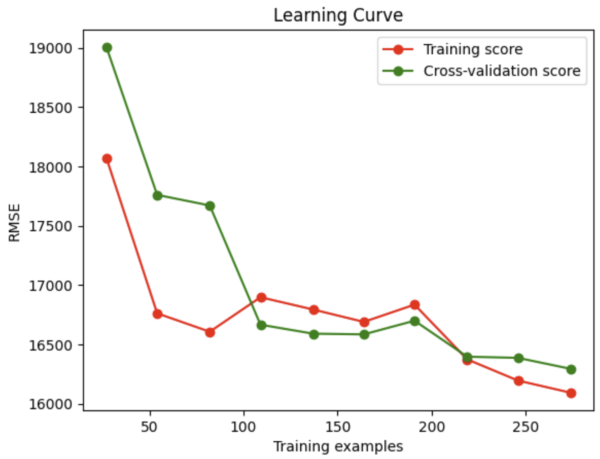
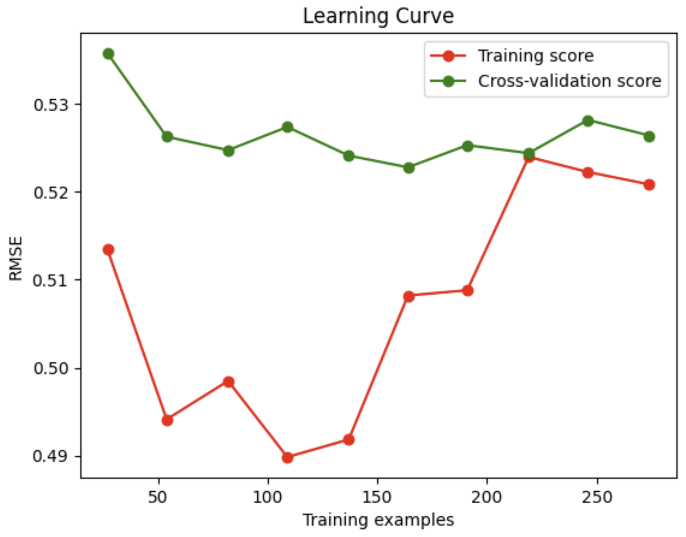
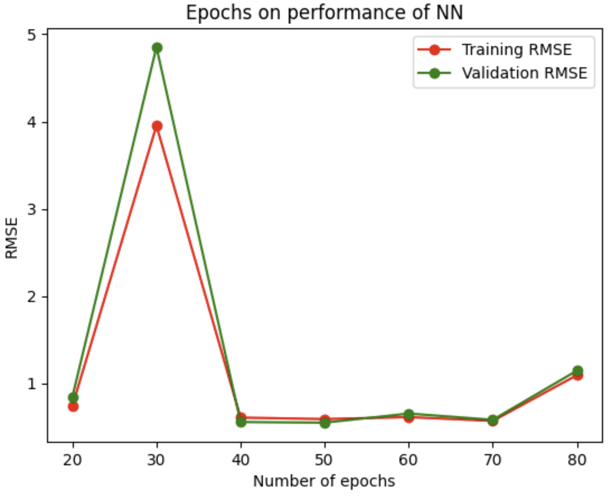

Modeling Local Economies
This project aims to explore the potential of leveraging concert-related data with Google Trends data to predict Gross Domestic Product (GDP) growth in local state economies. Preliminary data analysis shows some positive correlation between concert revenue data and GDP growth as well as Google Trend popularity and GDP growth. By applying machine learning techniques to the problem, GDP growth could be predicted within an acceptable margin, but various confounding factors limit the confidence of these results.
Introduction
Traditional approaches to forecasting economic activity through measures such as Gross Domestic Product (GDP) or GDP growth are limited by the sparsity of available economic indicators, since data is usually provided at most monthly or quarterly. Even when relevant data does become available, the lag between collection and publication usually renders the data less useful for forecasting the economy at the present moment or in the near future. In the absence of more frequent data collection and publication, economists have turned to Dynamic Factor Models (DFMs)(Glaeser, Kim, and Luca 2017) to forecast the ‘state’ of the economy (for a locality, state, or country) on a more frequent basis. DFMs hypothesize that complicated overall economic trends can be approximated by a few variables (dynamic factors) which describe most of the variance in the time series(Stock and Watson 2011).
This year, the worldwide concert tours of music artists Taylor Swift (Eras Tour) and Beyoncé (Renaissance Tour) have excited music fans, many of whom spend hundreds or thousands of dollars on concert tickets, travel, and accommodations in order to attend the concert. The Taylor Swift and Beyoncé tours in particular have made headlines in recent months for their revenue generation, and the economic activity that they have spurred in the cities they have visited. When Taylor Swift performed in Denver for two nights in July, the Colorado-based Common Sense Institute estimated Anderson and Archuleta (2023) that her stop in the state would generate $38 million in ticket sales, and contribute $140 million to the Colorado economy.
The full extent of the economic impact of these two popular concert tours is not yet understood, in part because economic indicators from this year have yet to be released and reviewed. Additionally, it is unclear whether there does indeed exist a statistically significant relationship between concert tours and economic activity in the cities where the tour visits. Nevertheless, given that the entire Eras tour is estimated to contribute nearly $5 billion in overall economic impact McIntyre (2023), it is worthwhile to investigate the extent to which concert tours can provide useful data for forecasting current economic trends. As a proxy for not-yet-available economic data about cities where for the Eras* and Renaissance tours performed, we propose to train a model to learn a generalized relationship between concert attendance and local economic activity.
Literature Review and Existing Approaches
Predicting GDP growth and macroeconomic output has long been a sought-after goal in the world of machine learning. It was found that K-Nearest Neighbor’s model trained off of macroeconomic variables such as yield curves, consumer price index and unemployment rate was able to best predict total US GDP Maccarrone G and S (2021). Similarly, predicting the GDP of several European countries using sentiment data recorded from business and consumer expectation data saw some success Oscar Claveria and Torra (2021). In particular, this group used an application of NowCasting in their approach. NowCasting attempts to circumvent infrequent GDP data by using higher-frequency, noisier data in order to forecast economic growth. While these approaches make use of various macroeconomic and sentiment variables when predicting economic growth, they fail to consider how the consumer-centric big events that the Taylor Swift and Beyoncé tours fall under may drive economic growth. In addition, they focus on predicting macroeconomic output for entire countries instead of smaller regions and municipalities which may be affected more by these concert events.
Luckily, researchers from the National Bureau of Economic Research have developed a new way to use NowCasting to forecast local economies using crowd-sourced data from yelp in Glaesar et. al@glaeserNowcastingLocalEconomy2017. Alternatively, in Krindlier et. al, researchers were able to use cell phone data from the networks as well as the Google Maps API to track large congregations of people and determine centers of high economic activity@kreindlerMeasuringCommutingEconomic2023. The combination of these approaches will allow us to accurately gauge the value brought by these big events.
Data Collection and Processing
Our data came from three sources: state-level quarterly GDP data from the Bureau of Economic Analysis, concert attendance and revenue data scraped from Wikipedia, and state-by-state search trends from Google Trends. Combining these three sources allows us to form a picture of how search trends correlate with concert attendance, and in turn how concert attendance may impact economic activity.
Economic Data
The Bureau of Economic Analysis provides real GDP figures for each state on a quarterly basis. We use GDP data from 2015 to 2019, as this corresponds with the time period we are most interested in. Using the GDP figures, we manually calculate the percent change between quarters to derive a state’s quarter-over-quarter GDP growth. For example, a GDP growth of 1.5% indicates that the state’s GDP grew by 1.5% in the current quarter compared to the preceding quarter. We then group our data by state and quarter to generate a table with a single column—GDP growth—that corresponds to the output we aim to predict.
Concert Data
To train our candidate models, we looked to form a training dataset consisting of concert tours from prior years with similar crowd sizes and durations as the current Beyoncé and Taylor Swift tours. We limited our search to only concerts before 2020 to avoid any confounding effects of the COVID-19 pandemic. Ultimately, we settled on a time frame between 2015 and 2019 (inclusive), which we believed would provide a sufficient number of concerts and quality search data. Then, using the Wikipedia article on the ``highest-grossing concert tours’’, we manually compiled the data for the eight concert tours matching our search conditions. Using Wikipedia provided the significant advantage of standardized tables for each concert tour listing the tour dates, venues, estimated attendance, and estimated revenue. After these tables were copied from Wikipedia, they only needed relatively little pre-processing before this concert data could be combined with the economic data to develop estimates for the total concert revenue per state per quarter, or the total number of concerts in a state for a particular quarter. Both of these metrics were used as independent variables to be correlated with state GDP growth.
Google Trends Data
While originally intending on using Twitter data to obtain hyper-local data regarding the interest around a certain artist’s concert, we were unable to do so given that recent changes to the Twitter (now X) API made obtaining tweet data prohibitively expensive. Needing a similar proxy for public interest in each artist in our concert dataset, we turned to Google Trends. Google Trends provides relative data about the popularity of search terms over a given time period. Thus, we were able to download state-level search data for each artist in our concert dataset (8 in total) between 2015 and 2019. These time series provide valuable information about the relative popularity of each artist, and when popularity peaks or plateaus. However, Google Trends provides only relative—and not absolute—figures, meaning that the values in the downloaded data depend on which other search terms are included in the Google Trends query. The Google Trends API limited us to a maximum of five search terms per query, so we needed two separate queries in order to cover all artists in our dataset. Thus, to ensure that search figures from one query remained comparable with those in the other query, we used a ‘common denominator’ search term of “Alphabet” in both queries. Then, we divide the relative search popularities for each artist by that of “Alphabet” to generate an arbitrary “Google Trend Index” that allows comparison across all artists.
Preliminary Findings
It is imperative to conduct preliminary analysis on the data to ascertain the potential efficacy of using machine learning models. The following subsections will present a visual and statistical analysis of the data and discuss the implications of this analysis on the use of machine learning models to predict GDP growth.
Concert Data Analysis
Preliminary analysis started with the concert data and its possible linear relationships with GDP growth.

As shown by Figure Figure 1, there appears to be some nonzero positive correlation between quarterly total concert revenue and quarterly GDP growth. As mentioned before, the economic data we have access to only captures the quarter-over-quarter GDP growth of each state. So, in order to compare it to the concert data, the revenues of concerts within each state were totaled up for each quarter. That way, the quarterly GDP growth for each state could be compared to the quarterly concert revenue for each state. The positive Pearson correlation coefficient of \(0.164\) indicates that there is some positive albeit slight correlation between our data that machine learning models may be able to exploit.

As shown by Figure Figure 2, there appears to be a statistically significant difference in GDP growth for quarters in which a state had no concerts versus quarters in which a state had one or more concerts. This distinction is important to make as the plot in Figure Figure 1 only considered quarters for states that had concerts. While the p-value for Figure Figure 2 is convincing on its own, it is important to note that this could be a result of a couple of outliers that can be seen on the left-hand side of the histogram. As shown, there are strong outliers for quarters with no concerts towards negative GDP growth while GDP growth for one or more concerts seems to be more consistently positive. Nonetheless, the positive results of this part of the preliminary analysis show enough possibility that a machine learning model could perform well in predicting GDP growth from the concert data.
Google Trend Data Analysis
Preliminary analysis continued with understanding the potential correlations between the Google Trend data and GDP growth. Similar to before with the concert data, the data extracted from Google Trends needed to be aggregated in a specific fashion so that it could be compared to the quarterly GDP growth data. To prepare the Google Trend data for analysis, we implemented a multi-step aggregation process. Initially, we collected weekly Google Trend scores for each artist and organized these scores by state and quarter. For each artist, we then calculated the average score across all weeks within a given quarter for each state, yielding a single average score per artist for each state and quarter combination. Finally, to create a comprehensive data set, we computed the mean of these average scores for all artists, resulting in one consolidated average Google Trend score that represents each state and quarter. We will refer to this consolidated average Google Trend score as the Google Trend Index for that state and quarter. With the data aggregated by quarter and state, it could finally be compared to either quarterly GDP data or quarterly concert revenue for each state.

As shown by Figure Figure 3, there is a small positive correlation between the computed Google Trend Index and quarterly total concert revenue. Seeing how concert revenue and attendance are proportional, this suggests that Google Trend Index can be used to predict concert revenue or attendance through a machine learning model.

According to Figure Figure 4, there also appears to be some positive correlation between the previous quarter Google Trend Index and quarterly total concert revenue. For instance, the Google Trend Index of 2015’s first quarter can be correlated to the total revenue of 2015’s second quarter as indicated by the positive correlation coefficient.

Finally, as detailed by Figure Figure 5, the immediate relationship between Google Trend Index and quarterly GDP growth is unclear as although there is a positive correlation coefficient, the value of the correlation coefficient is almost zero. As a consequence, it may not be feasible to predict GDP growth using Google Trend Index alone with reasonable error. However, given the satisfactory results of the prior preliminary analysis, machine learning models will still be used to see if any relationship between these two sources can be extracted for the purposes of GDP growth prediction.
Evaluation
As evident from the preliminary analysis, there seems to be multiple sources of correlation that should be able to be exploited through machine learning models in order to ultimately predict GDP growth. From the preliminary analysis, it was clear that there were positive correlation coefficients, but the values of these were very small indicating the potential of a more non-linear correlation. As a result, the models selected needed to be complex enough to elegantly model non-linear equations. In particular, two models were chosen for this: a bagging regressor and a feed-forward neural network. These two were chosen because they offer a variety in sophistication with the bagging regressor being an overall ‘simpler’ model than the neural network which, under various circumstances, can either be better or worse for performance. These models were put to the test in three different applications that showed promise from our preliminary analysis: predicting concert attendance using Google Trend Index, predicting GDP growth using Google Trend Index, and predicting GDP growth using concert attendance.
For the first of these applications, predicting concert attendance using Google Trend Index, we first started by forming the input data for the models. The input data consisted of the Google Trend Index, the previous quarter Google Trend Index, and the populations for each state in 2020. Then, model hyperparameter tuning went underway. An 80/10/10 training/validation/test split was performed on the input data. The validation set was used to tune the hyperparameters for each model. The bagging regressor was constructed using linear regression as its base learner. Through validation against the validation set, 30 estimators were chosen. For the neural network, a feed-forward design consisting of three hidden layers (64, 128, and 32 neurons respectively) and one output layer was used following various network-structure tests against the validation set. It used the ReLU activation function for each layer, the ADAM optimization strategy, and mean squared loss as the loss metric. Through additional hyperparameter tuning against the validation set, the neural network used a batch size of 10 for training over 100 epochs. The results of the two models were surprising; the bagging regressor’s root mean squared testing error was about \(15695.6\) while the neural network’s root mean squared testing error was about \(22301.9\). These values may seem very high at first inspection, but a standard deviation for the concert attendance in our data set is about \(16722.7\). The bagging regressor greatly outperformed the neural network in this application and even had a testing root mean squared error that was less than one standard deviation of the attendance distribution, which means the model is able to predict attendance fairly well. On the other hand, the neural network’s testing loss was well above a standard deviation of the attendance distribution, suggesting it poorly predicts attendance.

According to the bagging regressor’s learning curve shown in Figure Figure 6, there also appears to be no signs of overfitting as both training and validation loss curves plateau at a low root mean squared error as the training samples increase.
As a result of the fairly positive results of the first application of the models with predicting concert attendance from the Google Trend Index, we next tried to use Google Trend Index to directly predict GDP growth. Our preliminary findings suggested there was some positive correlation between Google Trend Index and GDP growth, so it was important to explore this avenue with the bagging regressor and neural network. Like before with the first application, an 80/10/10 training/validation/test split was taken on the Google Trend Index input data. It was found that the number of estimators did not have an effect on validation loss, so 10 estimators were used for the testing for the bagging regressor. The same neural network structure was reused again for simplicity. This time, hyperparameter tuning against the validation set showed that a batch size of 10 over 20 epochs performed best when training the neural network. For the results, the root mean squared error under the testing set for the bagging regressor was about \(0.82\) while the neural network’s root mean squared testing error was about \(0.816\) for predicting GDP growth. A standard deviation of the GDP growth distribution in our data is about \(0.755\). Since neither of these models could predict GDP growth to a root mean squared error within a single standard deviation of the distribution, this indicates that these models were not sufficient for predicting GDP growth given the Google Trend Index alone. However, the training root mean squared losses for these models were about \(0.753\) and \(0.727\) for the bagging regressor and neural network, respectively. This indicates that these models might be suffering from overfitting since the training losses are much better than the testing losses. To see if this potential overfitting could be reduced, the neural network was restructured with the dropout strategy such that \(50\%\) of the neurons for any hidden layer would be ‘dropped out’ or removed during any given epoch of training. The dropout technique is a common method known to combat overfitting, but the results with the neural network model with dropout were about the same as the regular neural network, with a root mean squared testing loss of about \(0.833\). If overfitting is not the main culprit at play, it could just be either that there is not as strong of a connection between Google Trend Index and GDP growth that the models can extract or that the data granularity is too low, something that will be further discussed in section Section 7.1. As detailed in the preliminary analysis in section Section 5.1, there did not appear to be a significant correlation between Google Trend Index and GDP growth which may also help to provide an explanation for this; it may just not be feasible to exploit a relationship between these two sources.
Given the poor results with predicting GDP growth from Google Trend Index, we next sought to predict GDP growth using the concert attendance data. Keeping consistent with the other applications of the models, an 80/10/10 training/test/split was performed on the input data. The same neural network structure was used again and hyperparameter tuning for both models was conducted against the validation set. Through this, we found that 10 estimators performed best for the bagging regressor, and a batch size of 15 for 40 epochs performed best for the neural network for training. When tested on the testing data, the root mean squared loss for the bagging regressor was about \(0.58\) while the root mean squared loss for the neural network was about \(0.339\). As mentioned before, a standard deviation for the GDP growth in our data set is about \(0.755\), which means these models could be considered good predictors of GDP growth. This is especially true for the neural network which heavily outperformed the bagging regressor in this application with a testing loss less than half that of a standard deviation of the distribution.

While the bagging regressor also predicted GDP growth to a root mean squared error well within a standard deviation, we were curious why it performed much worse than the neural network in comparison. As detailed in Figure Figure 7, the training loss of the bagging regressor takes an interesting sharp turn towards a higher root mean squared error at around 150+ training samples used. This is fairly unusual and may explain why the validation loss curve does not seem to decrease as the training samples are increased. This unusual jump in training error could possibly be caused by outliers in the training data that appeared after the 150 mark or by virtue of there being such limited data to train on which will be further discussed in section Section 7.2. Nonetheless, this is a clear suspect for understanding why the bagging regressor performed worse. In comparison, the neural network had a much better performance with generalizing to unseen data as can be seen in Figure Figure 8. Similar to the bagging regressor’s learning curve shown in Figure Figure 7, there appears to be an unusual jump in training and validation loss when training for 30 epochs. This could be for a number of reasons ranging from an adaptive learning rate from the ADAM optimization temporarily worsening performance, possible noise in the data, or a consequence of the small data size which will be further addressed in section.

Overall, the results with these models showed that GDP growth could be predicted within acceptable margins given concert attendance data. However as will be touched upon next, the usefulness of these results still remains unclear due to the presence of various confounding factors present with this problem.
Limitations
Unfortunately, we were not able to achieve the prediction accuracy that we had hoped for, and the correlation between concert activity (attendance and revenue) and GDP growth is tenuous at best. However, we still believe that this relationship is an important one to explore with further research using more data. We identify the following limitations that impacted our work and which, if overcome, could render prediction more accurate in the future:
Data Granularity
Our data was inherently limited by the granularity of data provided by the Bureau of Economic Analysis, both on a geographic level and in terms of time scale. While the BEA provides GDP on a county level, it does so only on a yearly basis. We deemed this to be too large of a time frame to effectively measure the potential impact of concerts on economic activity, and opted instead to use state-level quarterly GDP data. This decision, while providing more frequent data, limited us to the state level geographically. For smaller states dominated by a single metropolitan area (e.g. a capital city), we do not expect the difference between county and state GDP data to be prohibitive. However, we anticipate weaker correlations between concerts and GDP for larger states with multiple large cities, where a concert in one city will not have an economic impact on another city in the state, nor will that concert have a measurable impact on the state’s overall economic activity. Thus, a key to future work would be more fine-grained economic data, preferably on the county or metropolitan level and with more frequent data collection (e.g. on a monthly or weekly basis).
Dataset Size
Another limiting factor in our modeling was the relatively small size of our training data. As a proof-of-concept, we opted to only to use the 8 concert tours mentioned in section Section 3.3, leaving open the possibility to add additional concert tours should our small-scale experiments generate positive results. However, we suspect that our limited concert data (n = 453 concerts) was insufficient to provide robust training data, especially since it lacked smaller concert tours which may visit less populous states.
Confounding Factors
Perhaps the biggest limitation to our work is disentangling the effect of confounding factors on economic growth. For one, it is not clear whether it is the concerts themselves that are the cause of better economic growth, or whether (perhaps more likely) concert-going is associated with better economic conditions, when people have more disposable income to spend on going to concerts and when tickets are cheaper. The fact that concert attendance and revenue is positively correlated with GDP growth may just be a byproduct of this. Additionally, our concert data is significantly skewed towards quarters 2 and 3, when the weather is milder and people have more time to spend on going to concerts. These potential confounding factors remain entangled in our data, and our experiments are not necessarily designed to disentangle them. Instead, we suspect that a different methodology, e.g. one based on a difference-in-difference analysis, would be better suited for determining whether there are causal forces at play.
Conclusion
While this study provides some initial insights into the potential relationship between concert activities, Google Trends data, and GDP growth, it also underscores the complexities and limitations of such an approach. The findings suggest that while concert-related data might have some predictive value, it cannot be relied upon in isolation for accurate economic forecasting. Further research is needed, with more granular data and sophisticated analytical methods, to fully understand the potential and limitations of using cultural events as indicators of economic trends.
Opportunities for Future Work
Future research in this area should focus on addressing the limitations identified in this study. Accessing more granular economic data, such as metropolitan, county or city-level GDP figures, could provide a clearer picture of the local economic impact of concerts. Expanding the dataset to include a wider range of concerts, including smaller and less popular tours, would also be beneficial in creating a more comprehensive model.
Additionally, future studies could explore the use of alternative data sources and methodologies to better isolate the impact of concerts from other economic factors. For instance, social media data might offer real-time insights into consumer sentiment and behavior related to concert events. Advanced statistical methods, such as causal inference techniques, could help in distinguishing the direct impact of concerts from broader economic trends.
Finally, extending this research to other forms of large-scale events, such as sports games, festivals, or conferences, could provide further insights into the relationship between cultural and economic activities. Such an expanded scope would contribute to a more nuanced understanding of how various aspects of social life interact with and influence economic dynamics.